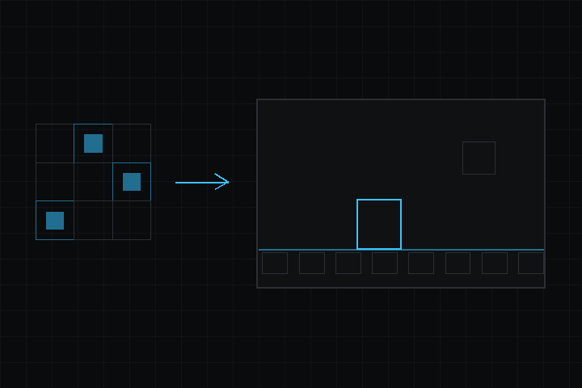

- 다음에 의해 생성됨 :
 1.18.0
1.18.0
|
deki-2d 0.40.0
Deki 패키지 레퍼런스
|

2D 콘텐츠 컴포넌트: 스프라이트와 스프라이트 배치, 텍스트(BitmapFont + TTF 베이킹), 애니메이션, 그라데이션, 버튼, 스크롤, 클리핑, 롤러.
저장소: github.com/dekiengine/deki-2d · 최신 릴리스: 0.40.0 · 엔진 0.40.0 이상 필요 · 의존: deki-rendering, deki-input
DekiEditor --packages-add deki-2d <project> 또는 패키지 관리자로 설치합니다. 엔진 자체의 컴포넌트와 C++ API는 Deki 문서에 있습니다.
에디터에는 2D(으)로 표시됩니다.
| 컴포넌트 | 카테고리 | 설명 |
|---|---|---|
| AnimationComponent | 2D | 오브젝트의 스프라이트에서 프레임 애니메이션 에셋을 재생합니다. |
| ArcComponent | 2D | 둥근 게이지나 다이얼입니다. 값을 링의 길이로 보여 줍니다. |
| BarComponent | 2D | 최솟값과 최댓값 사이의 값을 보여 주는 막대입니다. 체력, 로딩, 음량 등에 씁니다. |
| ButtonComponent | 2D | 오브젝트를 버튼으로 만듭니다. 호버와 누름을 추적하고 클릭 콜백을 호출합니다. |
| ButtonStyleComponent | 2D | 틴트 또는 스프라이트 교체로 버튼의 상태별 모양을 정합니다. |
| ChartComponent | 2D | 일련의 값을 나타내는 선 차트 또는 막대 차트입니다. |
| CheckboxComponent | 2D | 체크를 켜고 끌 수 있는 상자와 레이블입니다. |
| ClipComponent | 코어 | 자식의 렌더링을 사각형 영역으로 잘라냅니다. |
| DatePickerComponent | 2D | 날짜 선택기입니다. 일, 월, 연도 롤러로 고릅니다. |
| DropdownComponent | 2D | 선택지 목록을 열어 하나를 고르는 필드입니다. |
| GradientComponent | 2D | 선형, 방사형 또는 원뿔형 절차적 그라디언트를 그립니다. |
| KeyboardComponent | 2D | 텍스트 상자에 입력하는 화면 키보드입니다. |
| LedComponent | 2D | 색상, 밝기, 빛 번짐이 있는 둥근 표시등입니다. |
| ListComponent | 2D | 탭할 수 있는 행을 세로로 나열한 스크롤 리스트. 섹션 제목 포함. |
| MsgboxComponent | 2D | 제목, 메시지, 버튼이 있는 대화상자입니다. |
| RollerComponent | 2D | 선택 휠입니다. 관성으로 값 목록을 돌다가 하나에 맞춰 멈춥니다. |
| ScrollComponent | 2D | 드래그로 자식을 스크롤합니다. 관성이 적용됩니다. |
| ScrollElement | 2D | 목록 항목 하나의 크기를 지정하여 스크롤 컴포넌트가 목록을 배치할 수 있게 합니다. |
| ShapeComponent | 2D | 가장자리가 매끄러운 평면 도형을 그립니다. 둥근 사각형, 타원, 호, 삼각형, 체크 표시입니다. |
| SliderComponent | 2D | 노브를 드래그하거나 키로 한 단계씩 움직이는 막대입니다. 음량, 밝기 등에 씁니다. |
| SortingGroupComponent | 2D | 자식들을 하나의 단위로 묶어 씬의 나머지 부분과 함께 정렬되게 합니다. |
| SpinboxComponent | 2D | 빼기와 더하기 버튼이 달린 숫자입니다. |
| SpinnerComponent | 2D | 처리 중임을 알리는 표시입니다. 호가 링을 따라 돕니다. |
| SpriteBatchComponent | 2D | 스프라이트 하나의 여러 조각을 각각 자체 위치, 프레임, 정렬 순서로 그립니다. |
| SpriteComponent | 2D | 스프라이트를 그립니다. 틴트, 뒤집기, 타일 및 9-슬라이스 모드를 지원합니다. |
| SwitchComponent | 2D | 노브가 미끄러지는 켬/끔 스위치입니다. |
| TabviewComponent | 2D | 페이지 위에 늘어선 탭입니다. 한 번에 한 페이지만 보입니다. |
| TextComponent | 2D | 비트맵 폰트로 텍스트를 그립니다. 정렬과 단어 단위 줄 바꿈을 지원합니다. |
| TextareaComponent | 2D | 텍스트를 입력하는 상자입니다. 키보드나 화면 키보드로 입력합니다. |
빌드에서 뺄 수 있는 부분입니다. define이 있는 기능은 그 define으로 켜고 끄며, 나머지는 컴포넌트와 함께 제거됩니다.
| 기능 | define | 기본값 |
|---|---|---|
| Sprites | DEKI_FEATURE_SPRITE | 켜짐 |
| Text | DEKI_FEATURE_TEXT | 켜짐 |
| Animation | DEKI_FEATURE_ANIMATION | 켜짐 |
| Gradients | DEKI_FEATURE_GRADIENT | 켜짐 |
| Buttons | DEKI_FEATURE_BUTTON | 켜짐 |
| Scrolling | DEKI_FEATURE_SCROLL | 켜짐 |
| Rollers | DEKI_FEATURE_ROLLER | 켜짐 |
| Clipping | DEKI_FEATURE_CLIP | 켜짐 |
| Sorting Groups | DEKI_FEATURE_SORTING_GROUP | 켜짐 |
| Shapes | DEKI_FEATURE_SHAPE | 켜짐 |
| Bars | DEKI_FEATURE_BAR | 켜짐 |
| Sliders | DEKI_FEATURE_SLIDER | 켜짐 |
| Switches | DEKI_FEATURE_SWITCH | 켜짐 |
| Checkboxes | DEKI_FEATURE_CHECKBOX | 켜짐 |
| LEDs | DEKI_FEATURE_LED | 켜짐 |
| Arcs | DEKI_FEATURE_ARC | 켜짐 |
| Spinners | DEKI_FEATURE_SPINNER | 켜짐 |
| Spinboxes | DEKI_FEATURE_SPINBOX | 켜짐 |
| Dropdowns | DEKI_FEATURE_DROPDOWN | 켜짐 |
| Lists | DEKI_FEATURE_LIST | 켜짐 |
| Tab Views | DEKI_FEATURE_TABVIEW | 켜짐 |
| Message Boxes | DEKI_FEATURE_MSGBOX | 켜짐 |
| Date Pickers | DEKI_FEATURE_DATE_PICKER | 켜짐 |
| Text Areas | DEKI_FEATURE_TEXTAREA | 켜짐 |
| On-Screen Keyboards | DEKI_FEATURE_KEYBOARD | 켜짐 |
| Charts | DEKI_FEATURE_CHART | 켜짐 |
오브젝트의 스프라이트에서 프레임 애니메이션 에셋을 재생합니다.
인스펙터 이름: 애니메이션 컴포넌트 · 카테고리: 2D · 유형: Deki2D::AnimationComponent
| 속성 | 유형 | 기본값 | 설명 |
|---|---|---|---|
| animation | AssetRef (Animation) | "" | 프레임 애니메이션 에셋입니다. 프레임 목록과 각 프레임을 얼마나 오래 표시할지 담고 있습니다. |
| currentSequence | int32 | 0 | 재생 중인 이름 있는 시퀀스의 인덱스입니다. 시퀀스는 하나의 에셋 안에 있는 개별 애니메이션(idle, walk 등)입니다. |
| currentFrame | int32 | 0 | 현재 시퀀스 안의 프레임입니다. 값을 바꾸면 그 위치로 이동하며, 디버깅 중에 값을 확인할 때도 유용합니다. |
| isPlaying | bool | false | 애니메이션이 진행 중인지 여부입니다. 끄면 처음으로 되돌리지 않고 현재 프레임에서 멈춥니다. |
| hasFinished | bool | false | 반복하지 않는 시퀀스가 마지막 프레임에 도달하면 켜집니다. 다음으로 넘어갈 때를 알기 위해 읽습니다. |
| playOnceOverride | bool | false | 에셋에서 반복으로 지정되어 있어도 현재 시퀀스를 한 번만 재생합니다. 시퀀스가 바뀌면 꺼집니다. |
둥근 게이지나 다이얼입니다. 값을 링의 길이로 보여 줍니다.
인스펙터 이름: 아크 컴포넌트 · 카테고리: 2D · 유형: Deki2D::ArcComponent
| 속성 | 유형 | 기본값 | 제약 | 설명 |
|---|---|---|---|---|
| inputCollider | ObjectRef (InputCollider) | 0 | 드래그를 받는 히트 영역입니다. 에디터가 같은 오브젝트에 추가하고 링 크기에 맞춥니다. | |
| value | float | 40 | 표시할 값입니다. 최솟값과 최댓값 사이입니다. | |
| minValue | float | 0 | 링 시작의 값입니다. | |
| maxValue | float | 100 | 링 끝의 값입니다. | |
| step | float | 0 | 값이 최솟값부터 이 값의 배수에 맞춰집니다. 0이면 자유롭게 돕니다. | |
| size | float | 5 | 단위 m | 링의 지름(미터)입니다. |
| thickness | float | 0.6 | 단위 m | 링의 두께(미터)입니다. |
| startAngle | float | 3.92699 | 단위 rad | 링이 시작하는 위치, 곧 최솟값의 위치입니다. 0은 오른쪽이고, 225도는 게이지처럼 왼쪽 아래입니다. |
| sweepAngle | float | 4.71239 | 단위 rad | 시작점에서 시계 방향으로 링이 이어지는 각도입니다. 270도면 아래쪽이 비어 있습니다. |
| interactive | bool | true | 값을 드래그하거나 키로 바꿀 수 있게 합니다. 끄면 노브 없는 읽기 전용 게이지가 됩니다. |
최솟값과 최댓값 사이의 값을 보여 주는 막대입니다. 체력, 로딩, 음량 등에 씁니다.
인스펙터 이름: 바 컴포넌트 · 카테고리: 2D · 유형: Deki2D::BarComponent
| 속성 | 유형 | 기본값 | 제약 | 설명 |
|---|---|---|---|---|
| value | float | 50 | 표시할 값입니다. 최솟값과 최댓값 사이입니다. | |
| minValue | float | 0 | 빈 쪽 끝의 값입니다. | |
| maxValue | float | 100 | 가득 찬 쪽 끝의 값입니다. | |
| orientation | enum | "Horizontal" | Horizontal, Vertical | 가로는 왼쪽에서 오른쪽으로, 세로는 아래에서 위로 채웁니다. |
| width | float | 8 | 단위 m | 가로 막대의 길이, 또는 세로 막대의 두께(미터)입니다. |
| height | float | 0.75 | 단위 m | 가로 막대의 두께, 또는 세로 막대의 길이(미터)입니다. |
| glideSpeed | float | 0 | 0~60 | 채움이 새 값으로 옮겨 가는 속도입니다. 0이면 바로 옮겨 가고, 10이면 약 3분의 1초 만에 자리를 잡습니다. |
오브젝트를 버튼으로 만듭니다. 호버와 누름을 추적하고 클릭 콜백을 호출합니다.
인스펙터 이름: 버튼 컴포넌트 · 카테고리: 2D · 유형: Deki2D::ButtonComponent
| 속성 | 유형 | 기본값 | 제약 | 설명 |
|---|---|---|---|---|
| inputCollider | ObjectRef (InputCollider) | 0 | 이 버튼을 클릭할 수 있게 하는 히트 영역입니다. 없으면 버튼이 눌림을 감지할 수 없습니다. | |
| state | enum | "Normal" | Normal, Hovered, Pressed, Disabled | 일반, 호버, 눌림, 비활성화 중 하나입니다. 입력에 의해 설정되며, 스타일 컴포넌트가 이 값을 보고 무엇을 그릴지 정합니다. |
| isEnabled | bool | true | 비활성화된 버튼은 입력을 무시하고 비활성화 상태를 알리므로, 숨기는 대신 회색으로 표시할 수 있습니다. |
틴트 또는 스프라이트 교체로 버튼의 상태별 모양을 정합니다.
인스펙터 이름: 버튼 스타일 컴포넌트 · 카테고리: 2D · 유형: Deki2D::ButtonStyleComponent
| 속성 | 유형 | 기본값 | 제약 | 설명 |
|---|---|---|---|---|
| button | ObjectRef (ButtonComponent) | 0 | 상태로 이 스타일을 결정하는 버튼입니다. 보통 같은 오브젝트에 있는 버튼입니다. | |
| sprite | ObjectRef (SpriteComponent) | 0 | 이 스타일이 바꾸는 스프라이트입니다. 보통 같은 오브젝트에 있는 스프라이트입니다. | |
| transition | enum | "ColorTint" | ColorTint, SpriteSwap | 누를 때 틴트 색상을 바꿀지 스프라이트 자체를 교체할지 지정합니다. 색상이 더 가볍고, 별도 스프라이트를 쓰면 모양도 바꿀 수 있습니다. |
| normalColor | Color | "#FFFFFFFF" | transition이(가) 허용할 때 표시 | 버튼을 조작하지 않을 때의 틴트입니다. |
| hoveredColor | Color | "#C8C8C8FF" | transition이(가) 허용할 때 표시 | 포인터가 위에 있을 때의 틴트입니다. 터치 전용 장치에서는 거의 보이지 않습니다. |
| pressedColor | Color | "#A0A0A0FF" | transition이(가) 허용할 때 표시 | 누르고 있는 동안의 틴트입니다. 눌림이 인식되었음을 알려 주는 피드백입니다. |
| disabledColor | Color | "#80808080" | transition이(가) 허용할 때 표시 | 버튼이 비활성화되었을 때의 틴트입니다. 보통 흐리게 하거나 채도를 낮춥니다. |
| normalSprite | AssetRef (Sprite) | "" | transition이(가) 허용할 때 표시 | 스프라이트 교체 모드에서 조작하지 않을 때의 스프라이트입니다. |
| hoveredSprite | AssetRef (Sprite) | "" | transition이(가) 허용할 때 표시 | 스프라이트 교체 모드에서 호버 중일 때의 스프라이트입니다. |
| pressedSprite | AssetRef (Sprite) | "" | transition이(가) 허용할 때 표시 | 스프라이트 교체 모드에서 누르고 있는 동안의 스프라이트입니다. |
| disabledSprite | AssetRef (Sprite) | "" | transition이(가) 허용할 때 표시 | 스프라이트 교체 모드에서 비활성화되었을 때의 스프라이트입니다. |
일련의 값을 나타내는 선 차트 또는 막대 차트입니다.
인스펙터 이름: 차트 컴포넌트 · 카테고리: 2D · 유형: Deki2D::ChartComponent
| 속성 | 유형 | 기본값 | 제약 | 설명 |
|---|---|---|---|---|
| kind | enum | "Line" | Line, Bars | 점을 잇는 선, 또는 점마다 막대입니다. |
| points | Array<float> | [20.0, 45.0, 30.0, 60.0, 55.0, 80.0, 70.0] | 가장 오래된 것부터 나열한 값입니다. AddPoint는 끝에 더합니다. | |
| pointCount | int32 | 16 | 2~256 | 차트가 담는 점의 수입니다. 이를 넘어 점을 더하면 가장 오래된 점이 빠집니다. |
| minValue | float | 0 | 아래쪽 가장자리의 값입니다. | |
| maxValue | float | 100 | 위쪽 가장자리의 값입니다. | |
| gridLines | int32 | 4 | 0~16 | 차트를 가로지르는 가로 격자선 수입니다. 0이면 없습니다. |
| lineWidth | float | 0.18 | 단위 m | 선의 두께(미터)입니다. |
| width | float | 12 | 단위 m | 차트의 너비(미터)입니다. |
| height | float | 6 | 단위 m | 차트의 높이(미터)입니다. |
체크를 켜고 끌 수 있는 상자와 레이블입니다.
인스펙터 이름: 체크박스 컴포넌트 · 카테고리: 2D · 유형: Deki2D::CheckboxComponent
| 속성 | 유형 | 기본값 | 제약 | 설명 |
|---|---|---|---|---|
| inputCollider | ObjectRef (InputCollider) | 0 | 탭을 받는 히트 영역입니다. 에디터가 같은 오브젝트에 추가하고 상자와 레이블 크기에 맞춥니다. | |
| isChecked | bool | false | 상자가 체크되었는지 여부입니다. | |
| isEnabled | bool | true | 비활성화된 체크박스는 탭과 키를 무시합니다. | |
| label | string | "Checkbox" | 상자 옆에 표시할 텍스트입니다. | |
| width | float | 8 | 단위 m | 상자와 레이블을 합친 너비(미터)입니다. |
| boxSize | float | 1.5 | 단위 m | 상자의 크기(미터)입니다. 체크박스의 높이도 이 값입니다. |
| checkedColor | Color | "#408CFFFF" | 체크되었을 때 상자의 색상입니다. | |
| uncheckedColor | Color | "#8C92A0FF" | 체크되지 않았을 때 테두리 색상입니다. |
자식의 렌더링을 사각형 영역으로 잘라냅니다.
인스펙터 이름: 클립 컴포넌트 · 카테고리: 코어 · 유형: Deki2D::ClipComponent
| 속성 | 유형 | 기본값 | 제약 | 설명 |
|---|---|---|---|---|
| width | float | 6.25 | 단위 m | 클리핑 영역의 너비(미터)입니다. 자식은 이 가장자리에서 잘립니다. |
| height | float | 6.25 | 단위 m | 클리핑 영역의 높이(미터)입니다. |
| sortingOrder | int32 | 0 | 클립된 그룹 전체를 바깥의 모든 것과 비교한 그리기 순서입니다. |
날짜 선택기입니다. 일, 월, 연도 롤러로 고릅니다.
인스펙터 이름: 날짜 선택기 컴포넌트 · 카테고리: 2D · 유형: Deki2D::DatePickerComponent
| 속성 | 유형 | 기본값 | 제약 | 설명 |
|---|---|---|---|---|
| year | int32 | 2026 | 선택된 연도입니다. | |
| month | int32 | 1 | 1~12 | 선택된 월입니다. 1부터 12까지입니다. |
| day | int32 | 1 | 1~31 | 선택된 날짜입니다. 1부터 셉니다. |
| minYear | int32 | 2000 | 고를 수 있는 가장 이른 연도입니다. | |
| maxYear | int32 | 2050 | 고를 수 있는 가장 늦은 연도입니다. | |
| order | enum | "DayMonthYear" | DayMonthYear, MonthDayYear, YearMonthDay | 열의 순서입니다. 게임을 하는 곳의 날짜 표기에 맞춥니다. |
| monthNames | bool | true | 월을 숫자 대신 이름(Jan, Feb 등)으로 보여 줍니다. | |
| width | float | 11 | 단위 m | 날짜 선택기의 너비(미터)입니다. |
| rowHeight | float | 1.5 | 단위 m | 한 행의 높이(미터)입니다. 선택된 행은 조금 더 높습니다. |
선택지 목록을 열어 하나를 고르는 필드입니다.
인스펙터 이름: 드롭다운 컴포넌트 · 카테고리: 2D · 유형: Deki2D::DropdownComponent
| 속성 | 유형 | 기본값 | 제약 | 설명 |
|---|---|---|---|---|
| inputCollider | ObjectRef (InputCollider) | 0 | 닫힌 필드의 히트 영역입니다. 에디터가 같은 오브젝트에 추가하고 필드 크기에 맞춥니다. | |
| options | Array<string> | ["Easy", "Normal", "Hard"] | 순서대로 나열한 선택지입니다. | |
| selectedIndex | int32 | 0 | 선택된 선택지의 번호입니다. 0부터 셉니다. | |
| listRows | int32 | 4 | 1~12 | 열린 목록이 한 번에 보여 주는 행 수입니다. 선택지가 더 많으면 스크롤됩니다. |
| isEnabled | bool | true | 비활성화된 드롭다운은 탭과 키를 무시합니다. | |
| width | float | 7 | 단위 m | 필드와 목록의 너비(미터)입니다. |
| height | float | 1.75 | 단위 m | 필드와 목록 각 행의 높이(미터)입니다. |
선형, 방사형 또는 원뿔형 절차적 그라디언트를 그립니다.
인스펙터 이름: 그라디언트 컴포넌트 · 카테고리: 2D · 유형: Deki2D::GradientComponent
| 속성 | 유형 | 기본값 | 제약 | 설명 |
|---|---|---|---|---|
| gradientType | enum | "Linear" | Linear, Radial, Conical | 선형은 아래의 각도를 따라 색상을 배치합니다. 방사형은 중심점에서 바깥으로 색상을 배치합니다. |
| tileMode | enum | "None" | None, Horizontal, Vertical, Both, Mirror | 마지막 정지점 너머의 처리 방식입니다. 끝 색상을 유지하거나, 그라디언트를 반복하거나, 거꾸로 미러링합니다. |
| ditherMode | enum | "Ordered4x4" | None, Ordered2x2, Ordered4x4, Ordered8x8, Ordered16x16 | 디더링은 16비트 디스플레이에서 부드러운 그라디언트에 생기는 줄무늬를 고운 점무늬로 바꾸어 가려 줍니다. |
| ditherScale | uint8 | 1 | 아트 픽셀 단위의 디더 패턴 크기입니다. 1은 픽셀마다 디더링하고, 2, 4, 8, 16은 레트로한 느낌의 굵은 블록을 만듭니다. | |
| width | float | 0 | 단위 m | 그라디언트의 너비(미터)입니다. |
| height | float | 0 | 단위 m | 그라디언트의 높이(미터)입니다. |
| angle | float | 0 | 단위 rad | 선형 그라디언트가 진행하는 방향(라디안)입니다. 0이면 왼쪽에서 오른쪽으로 진행합니다. |
| centerX | float | 0.5 | 방사형 그라디언트의 가로 중심으로 0~1 값입니다. 0.5가 가운데입니다. | |
| centerY | float | 0.5 | 방사형 그라디언트의 세로 중심으로 0~1 값입니다. | |
| radius | float | 0.5 | 방사형 그라디언트가 마지막 정지점에 도달하기까지의 거리로, 크기에 대한 비율입니다. | |
| stopCount | uint8 | 2 | 네 개의 색상 정지점 중 몇 개를 사용할지 지정합니다. 나머지는 무시됩니다. | |
| stop1Position | float | 0 | 첫 번째 정지점이 그라디언트에서 놓이는 위치로 0~1 값입니다. | |
| stop1Color | Color | "#FFFFFFFF" | 첫 번째 정지점의 색상입니다. | |
| stop2Position | float | 1 | stopCount이(가) 허용할 때 표시 | 두 번째 정지점이 그라디언트에서 놓이는 위치로 0~1 값입니다. |
| stop2Color | Color | "#000000FF" | stopCount이(가) 허용할 때 표시 | 두 번째 정지점의 색상입니다. |
| stop3Position | float | 0 | stopCount이(가) 허용할 때 표시 | 세 번째 정지점의 위치로 0~1 값입니다. 정지점 개수가 3 이상일 때 사용됩니다. |
| stop3Color | Color | "#000000FF" | stopCount이(가) 허용할 때 표시 | 세 번째 정지점의 색상입니다. |
| stop4Position | float | 0 | stopCount이(가) 허용할 때 표시 | 네 번째 정지점의 위치로 0~1 값입니다. 정지점 개수가 4일 때 사용됩니다. |
| stop4Color | Color | "#000000FF" | stopCount이(가) 허용할 때 표시 | 네 번째 정지점의 색상입니다. |
| tileWidth | float | 0 | 단위 m | 타일 모드가 반복 또는 미러일 때 한 번 반복되는 너비입니다. |
| tileHeight | float | 0 | 단위 m | 타일 모드가 반복 또는 미러일 때 한 번 반복되는 높이입니다. |
RendererComponent에서 sortingOrder, ignoreClip, pixelSnap, alphaMode을(를) 상속합니다.
텍스트 상자에 입력하는 화면 키보드입니다.
인스펙터 이름: 키보드 컴포넌트 · 카테고리: 2D · 유형: Deki2D::KeyboardComponent
| 속성 | 유형 | 기본값 | 제약 | 설명 |
|---|---|---|---|---|
| inputCollider | ObjectRef (InputCollider) | 0 | 키 누름을 받는 히트 영역입니다. 에디터가 같은 오브젝트에 추가하고 키보드 크기에 맞춥니다. | |
| target | ObjectRef (TextareaComponent) | 0 | 키로 입력할 텍스트 상자입니다. | |
| mode | enum | "Lower" | Lower, Upper, Symbols | 소문자, 대문자, 또는 숫자와 기호입니다. |
| isEnabled | bool | true | 비활성화된 키보드는 누름을 무시합니다. | |
| width | float | 19 | 단위 m | 키보드의 너비(미터)입니다. |
| height | float | 7 | 단위 m | 키보드의 높이(미터)입니다. 키는 네 줄입니다. |
색상, 밝기, 빛 번짐이 있는 둥근 표시등입니다.
인스펙터 이름: LED 컴포넌트 · 카테고리: 2D · 유형: Deki2D::LedComponent
| 속성 | 유형 | 기본값 | 제약 | 설명 |
|---|---|---|---|---|
| color | Color | "#40DC78FF" | 최대 밝기일 때 표시등의 색상입니다. | |
| brightness | float | 1 | 0~1(슬라이더) | 표시등의 밝기입니다. 0(어두움)부터 1까지입니다. |
| isOn | bool | true | 끄면 밝기와 상관없이 표시등을 어둡게 보여 줍니다. | |
| size | float | 1 | 단위 m | 표시등의 지름(미터)입니다. |
| glow | float | 0.6 | 0~2 | 빛 번짐이 표시등 바깥으로 퍼지는 정도를 크기에 대한 비율로 정합니다. 0이면 없습니다. |
탭할 수 있는 행을 세로로 나열한 스크롤 리스트. 섹션 제목 포함.
인스펙터 이름: 리스트 컴포넌트 · 카테고리: 2D · 유형: Deki2D::ListComponent
| 속성 | 유형 | 기본값 | 제약 | 설명 |
|---|---|---|---|---|
| items | Array<string> | ["# Audio", "Music", "Sound effects", "# Display", "Brigh... | 위에서 아래로의 행. "\# "로 시작하는 행은 섹션 제목입니다. | |
| visibleRows | int32 | 5 | 1~16 | 한 번에 보이는 행 수. 항목이 더 많으면 스크롤됩니다. |
| isEnabled | bool | true | 비활성화된 리스트는 탭과 키를 무시합니다. | |
| width | float | 8 | 단위 m | 리스트의 너비(미터). |
| rowHeight | float | 1.5 | 단위 m | 각 행의 높이(미터). |
제목, 메시지, 버튼이 있는 대화상자입니다.
인스펙터 이름: 메시지 상자 컴포넌트 · 카테고리: 2D · 유형: Deki2D::MsgboxComponent
| 속성 | 유형 | 기본값 | 제약 | 설명 |
|---|---|---|---|---|
| title | string | "Title" | 대화상자의 제목입니다. | |
| message | string | "Message" | 제목 아래의 메시지입니다. 긴 줄은 줄바꿈됩니다. | |
| buttons | Array<string> | ["OK", "Cancel"] | 버튼 레이블입니다. 왼쪽에서 오른쪽으로 최대 세 개입니다. 첫 번째가 주 버튼으로 그려집니다. | |
| isOpen | bool | false | 대화상자를 보여 줄지 여부입니다. 코드에서는 Open과 Close로 설정합니다. 편집 중에 보려면 켭니다. | |
| closeOnEsc | bool | true | Esc로 대화상자를 취소로 닫습니다. 어떤 버튼도 누르지 않은 것으로 처리합니다. | |
| width | float | 14 | 단위 m | 대화상자의 너비(미터)입니다. |
| height | float | 8 | 단위 m | 대화상자의 높이(미터)입니다. |
선택 휠입니다. 관성으로 값 목록을 돌다가 하나에 맞춰 멈춥니다.
인스펙터 이름: 롤러 컴포넌트 · 카테고리: 2D · 유형: Deki2D::RollerComponent
| 속성 | 유형 | 기본값 | 제약 | 설명 |
|---|---|---|---|---|
| inputCollider | ObjectRef (InputCollider) | 0 | 드래그를 받는 히트 영역입니다. 없으면 롤러를 돌릴 수 없습니다. | |
| width | float | 6.25 | 단위 m | 롤러의 너비(미터)입니다. |
| itemHeight | float | 1.875 | 단위 m | 선택되지 않은 한 행의 높이(미터)입니다. |
| visibleRows | int32 | 3 | 선택된 행을 포함해 한 번에 보이는 행 수입니다. 홀수이면 선택 항목이 가운데에 옵니다. | |
| infiniteScroll | bool | false | 마지막 옵션에서 첫 번째 옵션으로 이어져 롤러가 끝없이 돕니다. | |
| reverseDrag | bool | false | 드래그 방향을 반대로 합니다. | |
| options | Array<string> | [] | 선택지 목록(순서대로)입니다. | |
| selectedIndex | int32 | 0 | 현재 선택된 옵션으로, 0부터 셉니다. | |
| deceleration | float | 0.95 | 플릭이 얼마나 빨리 느려지는지 지정합니다. 높을수록 빨리 멈춥니다. | |
| snapSpeed | float | 8 | 느려진 뒤 롤러가 가장 가까운 옵션에 자리 잡는 속도입니다. 높을수록 강하게 스냅합니다. | |
| selectedItemHeight | float | 2.5 | 단위 m | 선택된 행의 높이(미터)입니다. 다른 행보다 높게 하면 선택 항목이 구분됩니다. |
| selectedColor | Color | "#FFFFFFFF" | 선택된 행의 텍스트 색상입니다. | |
| normalColor | Color | "#808080FF" | 양옆 행의 텍스트 색상입니다. | |
| selectedFontSize | int32 | 24 | 선택된 행의 에디터 미리 보기 크기입니다. 장치에서는 폰트 에셋이 베이크된 크기로 그립니다. | |
| normalFontSize | int32 | 16 | 선택되지 않은 행의 에디터 미리 보기 크기입니다. |
드래그로 자식을 스크롤합니다. 관성이 적용됩니다.
인스펙터 이름: 스크롤 컴포넌트 · 카테고리: 2D · 유형: Deki2D::ScrollComponent
| 속성 | 유형 | 기본값 | 제약 | 설명 |
|---|---|---|---|---|
| inputCollider | ObjectRef (InputCollider) | 0 | 드래그를 받는 히트 영역입니다. 없으면 아무것도 스크롤할 수 없습니다. | |
| mode | enum | "NonTemplate" | NonTemplate, Template | 항목을 이미 있는 자식에서 가져올지, 아래의 씬에서 필요할 때 생성할지 지정합니다. |
| itemScene | AssetRef (Scene) | "" | mode이(가) 허용할 때 표시 | 생성 모드에서 항목마다 한 번씩 생성되는 씬입니다. 각 복사본은 스크롤되어 보일 때 내용이 채워집니다. |
| direction | enum | "Vertical" | Vertical, Horizontal | 세로 또는 가로 이동입니다. |
| itemSpacing | float | 0 | 단위 m | 항목 사이의 간격(미터)입니다. |
| paddingTop | float | 0 | 단위 m | 첫 번째 항목 앞의 빈 공간(미터)입니다. |
| paddingBottom | float | 0 | 단위 m | 마지막 항목 뒤의 빈 공간(미터)입니다. |
| paddingLeft | float | 0 | 단위 m | 왼쪽 가장자리의 빈 공간(미터)입니다. |
| paddingRight | float | 0 | 단위 m | 오른쪽 가장자리의 빈 공간(미터)입니다. |
| deceleration | float | 0.95 | 플릭이 얼마나 빨리 느려지는지 지정합니다. 높을수록 빨리 멈추고, 낮을수록 계속 미끄러집니다. | |
| bounceStiffness | float | 0.15 | 끝을 넘어 드래그한 뒤 목록이 되돌아오는 강도입니다. 높을수록 빨리 되돌아옵니다. | |
| enableBounce | bool | true | 목록을 끝 너머까지 드래그했다가 튕겨 돌아오게 합니다. 끄면 가장자리에서 딱 멈춥니다. | |
| enableInertia | bool | true | 손가락을 뗀 뒤에도 계속 움직입니다. 끄면 드래그가 끝나는 순간 목록이 멈춥니다. | |
| reverseDrag | bool | false | 드래그 방향을 반대로 하여 내용이 손가락과 반대 방향으로 움직이게 합니다. |
목록 항목 하나의 크기를 지정하여 스크롤 컴포넌트가 목록을 배치할 수 있게 합니다.
인스펙터 이름: 스크롤 요소 · 카테고리: 2D · 유형: Deki2D::ScrollElement
| 속성 | 유형 | 기본값 | 제약 | 설명 |
|---|---|---|---|---|
| width | float | 6.25 | 단위 m | 한 항목의 너비(미터)입니다. 스크롤은 이 값으로 간격과 이동할 수 있는 거리를 계산합니다. |
| height | float | 3.75 | 단위 m | 한 항목의 높이(미터)입니다. |
가장자리가 매끄러운 평면 도형을 그립니다. 둥근 사각형, 타원, 호, 삼각형, 체크 표시입니다.
인스펙터 이름: 셰이프 컴포넌트 · 카테고리: 2D · 유형: Deki2D::ShapeComponent
| 속성 | 유형 | 기본값 | 제약 | 설명 |
|---|---|---|---|---|
| kind | enum | "Rectangle" | Rectangle, Ellipse, Arc, Triangle, Check, Custom | 그릴 도형의 종류입니다. 사용자 지정은 코드가 써 넣은 것을 그립니다. |
| width | float | 4 | 단위 m | 도형의 너비(미터)입니다. |
| height | float | 4 | 단위 m | 도형의 높이(미터)입니다. |
| color | Color | "#FFFFFFFF" | 도형을 그리는 색상입니다. 알파 값으로 도형 전체가 흐려집니다. | |
| cornerRadius | float | 0 | 단위 m; kind이(가) 허용할 때 표시 | 둥근 모서리의 반지름(미터)입니다. 높이의 절반이면 양 끝이 둥근 모양이 됩니다. |
| lineWidth | float | 0 | 단위 m; kind이(가) 허용할 때 표시 | 0이면 도형을 채웁니다. 0보다 크면 가장자리 안쪽을 따라 이 두께의 선만 그립니다. 호와 체크 표시는 항상 선이며, 0이면 크기에 맞춰 두께를 정합니다. |
| startAngle | float | 0 | 단위 rad; kind이(가) 허용할 때 표시 | 호가 시작하는 위치입니다. 0은 오른쪽이며, 호는 여기서 시계 반대 방향으로 이어집니다. |
| endAngle | float | 6.28319 | 단위 rad; kind이(가) 허용할 때 표시 | 호가 끝나는 위치입니다. 시작에서 한 바퀴 지나면 링 전체를 그립니다. |
| roundCaps | bool | false | kind이(가) 허용할 때 표시 | 호의 끝을 네모나게 자르지 않고 둥글게 만듭니다. |
| direction | enum | "Down" | Down, Up, Left, Right; kind이(가) 허용할 때 표시 | 삼각형이 가리키는 방향입니다. |
RendererComponent에서 sortingOrder, ignoreClip, pixelSnap, alphaMode을(를) 상속합니다.
노브를 드래그하거나 키로 한 단계씩 움직이는 막대입니다. 음량, 밝기 등에 씁니다.
인스펙터 이름: 슬라이더 컴포넌트 · 카테고리: 2D · 유형: Deki2D::SliderComponent
| 속성 | 유형 | 기본값 | 제약 | 설명 |
|---|---|---|---|---|
| inputCollider | ObjectRef (InputCollider) | 0 | 드래그를 받는 히트 영역입니다. 에디터가 같은 오브젝트에 추가하고 슬라이더 크기에 맞춥니다. | |
| step | float | 0 | 값이 최솟값부터 이 값의 배수에 맞춰집니다. 0이면 자유롭게 움직입니다. | |
| keyStep | float | 0 | 키를 한 번 누를 때 값이 움직이는 양입니다. 0이면 범위의 20분의 1, 또는 한 단계만큼 움직입니다. | |
| knobSize | float | 1.5 | 단위 m | 노브의 지름(미터)입니다. |
| isEnabled | bool | true | 비활성화된 슬라이더는 터치와 키를 무시합니다. |
BarComponent에서 value, minValue, maxValue, orientation, width, height, glideSpeed을(를) 상속합니다.
자식들을 하나의 단위로 묶어 씬의 나머지 부분과 함께 정렬되게 합니다.
인스펙터 이름: 정렬 그룹 컴포넌트 · 카테고리: 2D · 유형: Deki2D::SortingGroupComponent
| 속성 | 유형 | 기본값 | 설명 |
|---|---|---|---|
| sortingOrder | int32 | 0 | 이 오브젝트의 하위 트리 전체를 하나의 단위로 취급하는 그리기 순서입니다. 자식끼리의 순서는 유지되지만 그룹 전체가 함께 움직이므로, 한 자식이 다른 그룹의 자식들 사이에 끼어드는 일이 없습니다. |
빼기와 더하기 버튼이 달린 숫자입니다.
인스펙터 이름: 스핀박스 컴포넌트 · 카테고리: 2D · 유형: Deki2D::SpinboxComponent
| 속성 | 유형 | 기본값 | 제약 | 설명 |
|---|---|---|---|---|
| inputCollider | ObjectRef (InputCollider) | 0 | 버튼 누름을 받는 히트 영역입니다. 에디터가 같은 오브젝트에 추가하고 스핀박스 크기에 맞춥니다. | |
| value | float | 0 | 표시할 숫자입니다. 최솟값과 최댓값 사이입니다. | |
| minValue | float | 0 | 가장 작은 숫자입니다. | |
| maxValue | float | 99 | 가장 큰 숫자입니다. | |
| step | float | 1 | 버튼을 한 번 누를 때 숫자가 바뀌는 양입니다. | |
| decimals | int32 | 0 | 0~4 | 소수점 뒤에 보여 줄 자릿수입니다. |
| wrap | bool | false | 가장 큰 숫자 다음에 가장 작은 숫자가 옵니다. 반대도 마찬가지입니다. | |
| isEnabled | bool | true | 비활성화된 스핀박스는 누름과 키를 무시합니다. | |
| width | float | 6.5 | 단위 m | 버튼을 포함한 스핀박스의 너비(미터)입니다. |
| height | float | 1.75 | 단위 m | 스핀박스의 높이(미터)입니다. 버튼은 정사각형입니다. |
처리 중임을 알리는 표시입니다. 호가 링을 따라 돕니다.
인스펙터 이름: 스피너 컴포넌트 · 카테고리: 2D · 유형: Deki2D::SpinnerComponent
| 속성 | 유형 | 기본값 | 제약 | 설명 |
|---|---|---|---|---|
| size | float | 2.5 | 단위 m | 스피너의 지름(미터)입니다. |
| thickness | float | 0.35 | 단위 m | 링의 두께(미터)입니다. |
| arcLength | float | 1.5708 | 단위 rad | 움직이는 호가 링을 얼마나 덮는지입니다. |
| turnsPerSecond | float | 1 | -5~5 | 초당 회전 수입니다. 음수면 시계 반대 방향으로 돕니다. |
| isSpinning | bool | true | 끄면 그 자리에서 멈춥니다. |
스프라이트 하나의 여러 조각을 각각 자체 위치, 프레임, 정렬 순서로 그립니다.
인스펙터 이름: 스프라이트 배치 컴포넌트 · 카테고리: 2D · 유형: Deki2D::SpriteBatchComponent
| 속성 | 유형 | 기본값 | 설명 |
|---|---|---|---|
| sprite | AssetRef (Sprite) | "" | 모든 조각을 잘라 내는 이미지입니다. 이미지 전체나 스프라이트 시트에서 잘라 냅니다. |
RendererComponent에서 sortingOrder, ignoreClip, pixelSnap, alphaMode을(를) 상속합니다.
스프라이트를 그립니다. 틴트, 뒤집기, 타일 및 9-슬라이스 모드를 지원합니다.
인스펙터 이름: 스프라이트 컴포넌트 · 카테고리: 2D · 유형: Deki2D::SpriteComponent
| 속성 | 유형 | 기본값 | 제약 | 설명 |
|---|---|---|---|---|
| sprite | AssetRef (Sprite) | "" | 그릴 이미지입니다. 스프라이트는 텍스처 에셋에서 가져오며, 전체를 쓰거나 스프라이트 시트에서 잘라 씁니다. | |
| tintColor | Color | "#FFFFFFFF" | 모든 픽셀에 곱해집니다. 흰색이면 이미지가 그대로이고, 어두운 틴트는 이미지를 어둡게 하며, 알파는 이미지를 흐리게 합니다. | |
| renderMode | enum | "Normal" | Normal, Tiled, NineSlice | 일반은 스프라이트를 한 번 그립니다. 타일은 아래 크기를 채우도록 반복합니다. 9-슬라이스는 모서리를 그대로 두고 가운데를 늘리므로 패널과 버튼에 알맞습니다. |
| flipHorizontal | bool | false | 왼쪽과 오른쪽을 뒤집습니다. 두 번째 스프라이트보다 가볍고, 캐릭터가 반대쪽을 보게 할 때 흔히 씁니다. | |
| flipVertical | bool | false | 위와 아래를 뒤집습니다. | |
| width | float | 0 | 단위 m; renderMode이(가) 허용할 때 표시 | 그려지는 크기(미터)입니다. 0으로 두면 스프라이트 자체의 픽셀 크기를 프로젝트의 미터당 픽셀 수로 환산해 사용합니다. |
| height | float | 0 | 단위 m; renderMode이(가) 허용할 때 표시 | 그려지는 크기(미터)입니다. 0으로 두면 스프라이트 자체의 픽셀 크기를 프로젝트의 미터당 픽셀 수로 환산해 사용합니다. |
RendererComponent에서 sortingOrder, ignoreClip, pixelSnap, alphaMode을(를) 상속합니다.
노브가 미끄러지는 켬/끔 스위치입니다.
인스펙터 이름: 스위치 컴포넌트 · 카테고리: 2D · 유형: Deki2D::SwitchComponent
| 속성 | 유형 | 기본값 | 제약 | 설명 |
|---|---|---|---|---|
| inputCollider | ObjectRef (InputCollider) | 0 | 탭을 받는 히트 영역입니다. 에디터가 같은 오브젝트에 추가하고 스위치 크기에 맞춥니다. | |
| isOn | bool | false | 스위치가 켜져 있는지 여부입니다. | |
| isEnabled | bool | true | 비활성화된 스위치는 탭과 키를 무시합니다. | |
| width | float | 3 | 단위 m | 스위치의 너비(미터)입니다. |
| height | float | 1.6 | 단위 m | 스위치의 높이(미터)입니다. |
| onColor | Color | "#408CFFFF" | 켜져 있을 때 트랙의 색상입니다. | |
| offColor | Color | "#3A3F4BFF" | 꺼져 있을 때 트랙의 색상입니다. | |
| glideSpeed | float | 14 | 0~60 | 노브가 미끄러지는 속도입니다. 0이면 바로 옮겨 갑니다. |
페이지 위에 늘어선 탭입니다. 한 번에 한 페이지만 보입니다.
인스펙터 이름: 탭 뷰 컴포넌트 · 카테고리: 2D · 유형: Deki2D::TabviewComponent
| 속성 | 유형 | 기본값 | 제약 | 설명 |
|---|---|---|---|---|
| tabs | Array<string> | ["One", "Two", "Three"] | 순서대로 나열한 탭 제목입니다. 각 탭에는 페이지(Page0, Page1 등)가 있습니다. | |
| selectedTab | int32 | 0 | 보이는 탭의 번호입니다. 0부터 셉니다. | |
| isEnabled | bool | true | 비활성화된 탭 뷰는 탭과 키를 무시합니다. | |
| width | float | 16 | 단위 m | 탭 뷰의 너비(미터)입니다. |
| height | float | 10 | 단위 m | 탭 바를 포함한 탭 뷰의 높이(미터)입니다. 나머지는 페이지가 채웁니다. |
| barHeight | float | 1.75 | 단위 m | 탭 바의 높이(미터)입니다. |
| glideSpeed | float | 14 | 0~60 | 탭 아래의 선이 새 탭으로 미끄러지는 속도입니다. 0이면 바로 옮겨 갑니다. |
비트맵 폰트로 텍스트를 그립니다. 정렬과 단어 단위 줄 바꿈을 지원합니다.
인스펙터 이름: 텍스트 컴포넌트 · 카테고리: 2D · 유형: Deki2D::TextComponent
| 속성 | 유형 | 기본값 | 제약 | 설명 |
|---|---|---|---|---|
| text | string | "" | 그릴 문자열입니다. 줄 바꿈은 새 줄을 시작하며, 너비를 설정하면 단어 사이에서 줄을 바꿔 너비에 맞춥니다. | |
| font | AssetRef (BitmapFont) | "" | TrueType 또는 BDF 폰트 에셋입니다. TrueType 폰트를 그리는 크기는 '폰트 크기'로 고릅니다. | |
| fontSize | int32 | 16 | 6~128 | 픽셀 단위의 폰트 크기입니다. 텍스트가 이 크기를 처음 쓸 때 에디터가 이 크기로 폰트를 베이크하며, 빌드에는 텍스트가 쓰는 크기가 들어갑니다. |
| width | float | 6.25 | 단위 m | 텍스트 상자의 너비(미터)입니다. 정렬은 이 너비를 기준으로 하므로 텍스트가 더 짧아도 영향을 줍니다. |
| height | float | 1.5 | 단위 m | 텍스트 상자의 높이(미터)입니다. 세로 정렬은 이 높이를 기준으로 합니다. |
| color | Color | "#FFFFFFFF" | 글리프의 색상입니다. | |
| decorationColor | Color | "#000000FF" | 폰트 에셋을 외곽선이나 그림자와 함께 베이크했을 때 그 색상입니다. 장식 없는 폰트에서는 무시됩니다. | |
| pixelScale | int32 | 1 | 정수 배율 확대입니다. 2이면 글리프의 각 픽셀을 2x2 블록으로 그려 픽셀 폰트가 흐려지지 않고 선명하게 유지됩니다. | |
| align | enum | "Left" | Left, Center, Right | 위의 너비 안에서의 가로 위치입니다. |
| verticalAlign | enum | "CapCenter" | Top, Middle, Bottom, CapCenter, XCenter, TypoCenter, Baseline | 위의 높이 안에서의 세로 위치입니다. 대문자 중앙은 대문자를 기준으로 맞추므로 보통 눈으로 보기에 가운데로 보입니다. 실제 중앙은 디센더까지 포함합니다. |
RendererComponent에서 sortingOrder, ignoreClip, pixelSnap, alphaMode을(를) 상속합니다.
텍스트를 입력하는 상자입니다. 키보드나 화면 키보드로 입력합니다.
인스펙터 이름: 텍스트 영역 컴포넌트 · 카테고리: 2D · 유형: Deki2D::TextareaComponent
| 속성 | 유형 | 기본값 | 제약 | 설명 |
|---|---|---|---|---|
| inputCollider | ObjectRef (InputCollider) | 0 | 입력을 시작하는 탭을 받는 히트 영역입니다. 에디터가 같은 오브젝트에 추가하고 상자 크기에 맞춥니다. | |
| text | string | "" | 지금까지 입력한 텍스트입니다. | |
| placeholder | string | "Type here" | 상자가 비어 있는 동안 흐리게 보입니다. | |
| maxLength | int32 | 32 | 0~1024 | 받을 수 있는 최대 문자 수입니다. 0이면 제한이 없습니다. |
| oneLine | bool | true | 한 줄이면 Enter로 제출합니다. 끄면 Enter로 줄을 바꾸고 긴 줄은 줄바꿈됩니다. | |
| password | bool | false | 텍스트 대신 문자마다 별표를 보여 줍니다. | |
| isEnabled | bool | true | 비활성화된 상자는 탭과 입력을 무시합니다. | |
| width | float | 10 | 단위 m | 상자의 너비(미터)입니다. |
| height | float | 1.75 | 단위 m | 상자의 높이(미터)입니다. |
변경 내역은 영어로 되어 있습니다.
이전 릴리스: CHANGELOG.md
패키지의 리플렉션 데이터에서 생성했습니다(엔진 0.40.0). 속성 이름은 씬 파일에서 쓰는 키입니다. 이름을 바꿔도 별칭이 유지됩니다(호환성).